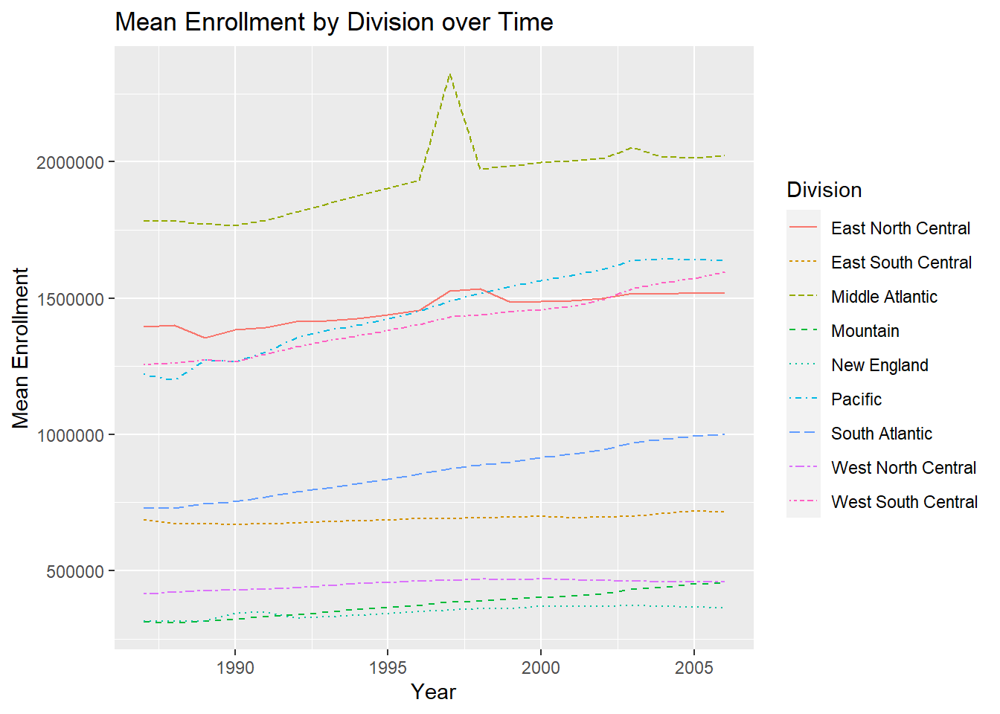
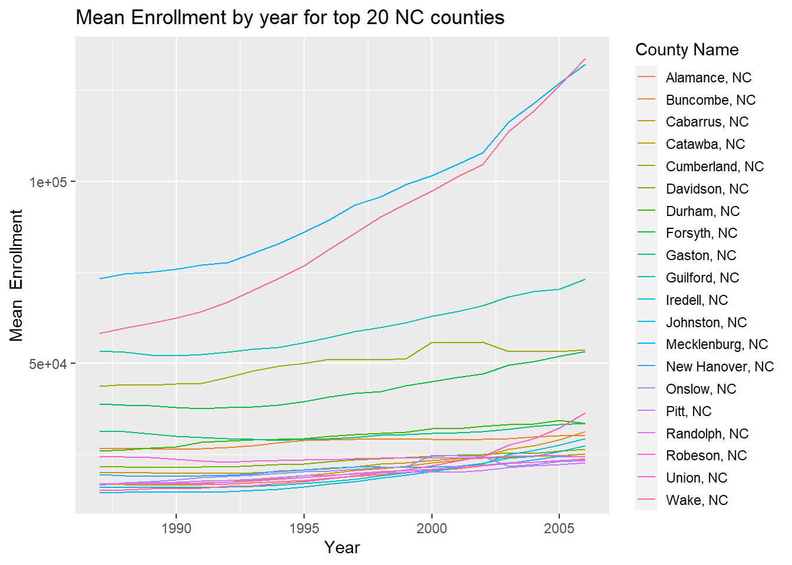
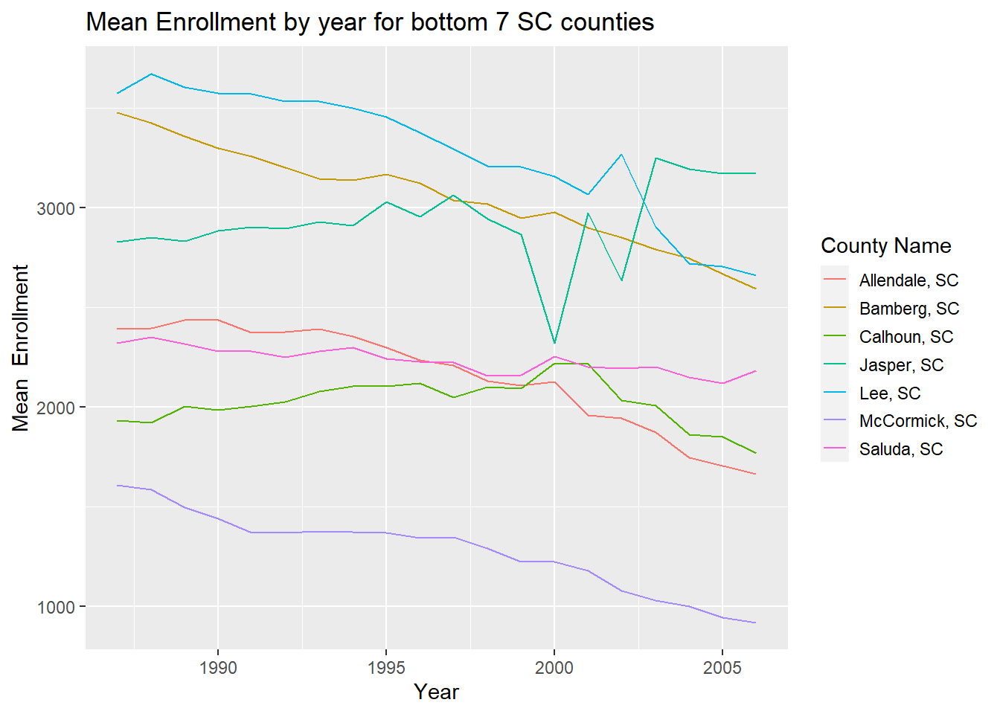
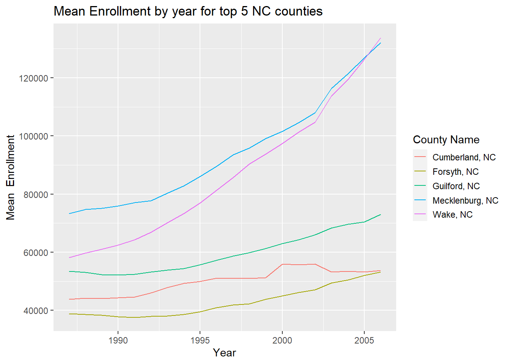
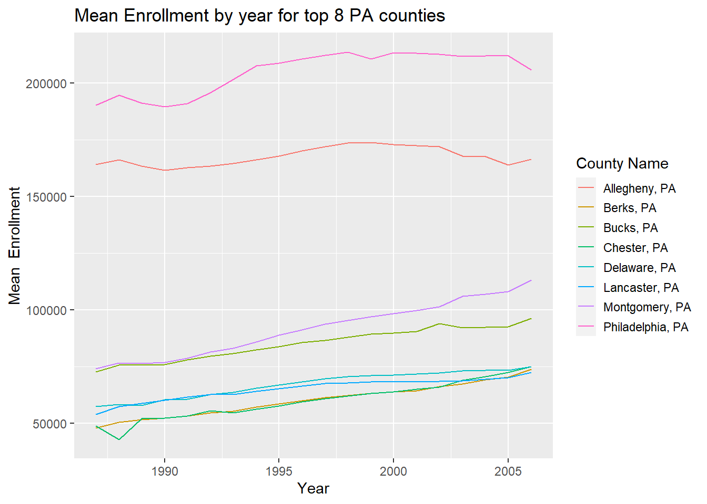
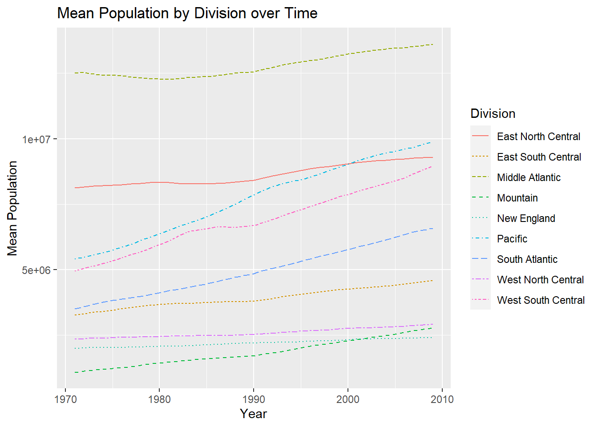
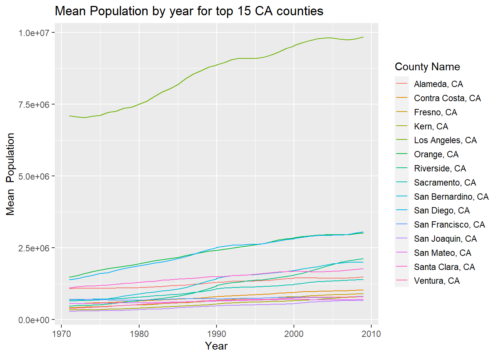
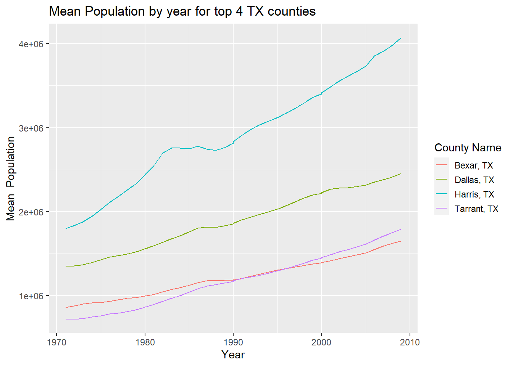
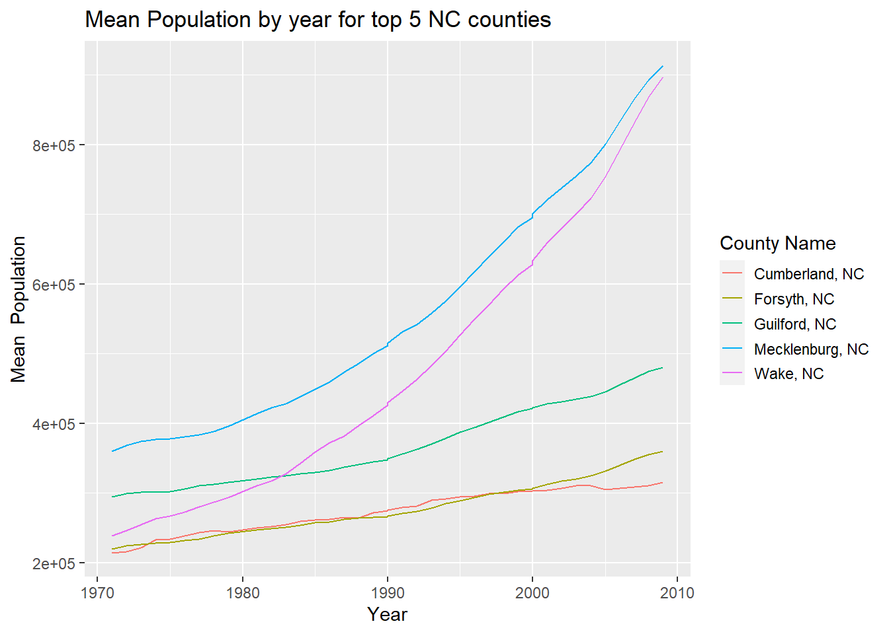
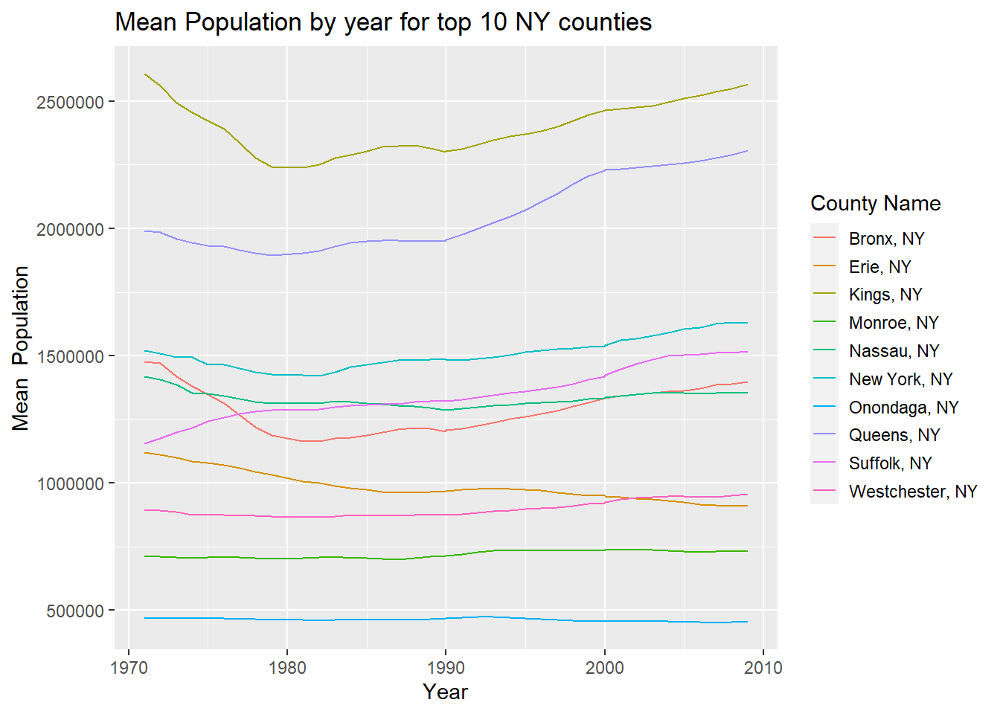

tidy_data <- function(data, values = "Enrollment"){
new_df <- data |>
#Select only certain columns
select(Area_name, STCOU, ends_with("D")) |>
#Rename Area_name column.
rename(area_name = Area_name) |>
#Pivot longer to a column called values (input argument)
pivot_longer(cols = 3:12,
names_to = "time",
values_to = values) |>
#Remove missing values
filter(get(values) != 0) |>
#Remove invalid data point in Population dataset.
filter(!(area_name == "Kings, NY" & get(values) > 7000000))
return(new_df)
}ST 558 Project 1
Data Processing Functions
Steps 1 & 2 Function
This function is taking in a dataset and has a default arugment of “Enrollment”. It then creates a new data frame called new_df and selects only the columns called Area_name, STCOU, and any column ending with D. It is renaming the Area_name column as area_name and pivoting longer on columns 3 through 12. It is taking the names to “time” and the values_to the values column as given by the argument. It is also removing outliers. Based on this secondary source https://fred.stlouisfed.org/series/NYKING7POP, it appears that the population jump of over 7 million in Kings, NY in 1992 was a data entry error and therefore this data point was removed as well. It returns the new_df.
Step 3 Function
This is a function called add_year that takes in new_df (the output of the previous function). It initializes a numeric vector of length of the number of rows of the input, new_df. Then, using a for loop it loops through all iterations of the time column of the new_df and takes the 8th and 9th strings. Then it takes that value and converts it to a numeric variable. Then, if that number is less than 20, it adds 2000 so for example if the number was 03 it would change to 2003. Otherwise, add 1900 to get something like 1997. Since there are no data values in the 1920s or earlier, this pattern will hold. It is storing each of these values in the initial vector created.
add_year <- function(new_df){
#Initialize numeric vector of length of number of rows.
Year_Date <- numeric(nrow(new_df))
#Create a for loop.
for(i in seq_along(new_df$time)){
time_year <- substr(new_df$time[i],8,9)
year_numeric <- as.numeric(time_year)
year_numeric <- ifelse(year_numeric < 20,
year_numeric + 2000,
year_numeric + 1900)
#Store in Year_Date
Year_Date[i] <- year_numeric
}
#Initialize a new character vector called measurement.
measurement <- character(nrow(new_df))
#Loop through the time column of new_df and pulls strings 1-7.
for(i in seq_along(new_df$time)){
measurement_type <- substr(new_df$time[i], 1, 7)
#Stores those values in measurement vector.
measurement[i] <- measurement_type
}
new_df |>
#Adds columns for Year_Date and Measurement.
mutate(Year_Date = Year_Date,
Measurement = measurement) |>
#Gets rid of the time column since that is no longer needed.
select(-time)
}Step 5 Function
This creates a function called add_state that first creates a character vector called state_name that is the length of the number of rows in the inputted data set. Then, it loops through the area_name column and creates a new vector called state_info that takes the area_name column and looks at the second to last string and the last string there. Then it stores each of these in the ith element of the state_name character vector initially created. It returns the initial data set with an added column called State.
add_state<- function(input){
#Initalize character vector called state_name.
state_name <- character(nrow(input))
#Loop through area_name column and extract last two strings.
for(i in seq_along(input$area_name)){
state_info <- substr(input$area_name[i],
nchar(input$area_name[i]) -1,
nchar(input$area_name[i]))
#Store in state_name
state_name[i] <- state_info
}
return(input |>
#Add column corresponding to 2 character string of state name.
mutate(State = state_name))
}Step 6 Function
This function is called add_division. It takes the data_input and adds a column called Division. This uses a vectorized function ifelse to assign different states to different divisions. If the area_name doesn’t match any of the states (such as in the case of United States), it is denoted as error. Finally, it removes the extra DC rows.
add_division <- function(data_input){
data_input <- data_input |>
#Add column corresponding to division.
mutate(Division =
ifelse(area_name %in% c("CONNECTICUT", "MAINE", "MASSACHUSETTS", "NEW HAMPSHIRE", "RHODE ISLAND", "VERMONT"), "New England",
ifelse(area_name %in% c("NEW JERSEY", "NEW YORK", "PENNSYLVANIA"), "Middle Atlantic",
ifelse(area_name %in% c("ILLINOIS", "INDIANA", "MICHIGAN", "OHIO", "WISCONSIN"), "East North Central",
ifelse(area_name %in% c("IOWA", "KANSAS", "MINNESOTA", "MISSOURI", "NEBRASKA", "NORTH DAKOTA", "SOUTH DAKOTA"), "West North Central",
ifelse(area_name %in% c("DELAWARE", "FLORIDA", "GEORGIA", "MARYLAND", "NORTH CAROLINA", "SOUTH CAROLINA", "VIRGINIA", "DISTRICT OF COLUMBIA", "District of Columbia", "WEST VIRGINIA"), "South Atlantic",
ifelse(area_name %in% c("ALABAMA", "KENTUCKY", "MISSISSIPPI", "TENNESSEE"), "East South Central",
ifelse(area_name %in% c("ARKANSAS", "LOUISIANA", "OKLAHOMA", "TEXAS"), "West South Central",
ifelse(area_name %in% c("ARIZONA", "COLORADO", "IDAHO", "MONTANA", "NEVADA", "NEW MEXICO", "UTAH", "WYOMING"), "Mountain",
ifelse(area_name %in% c("ALASKA", "CALIFORNIA", "HAWAII", "OREGON", "WASHINGTON"), "Pacific",
"Error")))))))))) |>
#Remove extra DC rows.
filter((area_name != "District of Columbia"))
#Return the data input with the removed rows and the new Division column.
return(data_input)
}Step 4 Function with calling Steps 5 & 6 Function
This function first creates a vector called county_indices that looks for the pattern such as Wake, NC where the first part corresponds to the county and the last two to the state. Then it filters to only look at the row numbers in the county indices and assigns that to a tibble called county_data. Finally it assigns a class called county. Then it applies the add_state function above to the county tibble to create a new tibble called add_state_info.
get_new_tibbles <- function(input_data){
#Create county_indices vector looking for pattern.
county_indices <- grep(pattern = ", \\w\\w", input_data$area_name)
#Store as county data only those row numbers that follow pattern.
county_data <- input_data |>
filter(row_number() %in% county_indices)
#Add a class called county.
class(county_data) <- c("county", class(county_data))
#Call add_state function (Step 5)
add_state_info <-add_state(county_data)
#Store as non_county_data those row numbers that don't follow pattern above.
non_county_data <- input_data |>
filter(!row_number() %in% county_indices)
#Add a class called state.
class(non_county_data) <- c("state", class(non_county_data))
#Call add_division function.
add_division_info <- add_division(non_county_data)
#Return a list of two tibbles.
return(list("County Data" = add_state_info, "Non-County Data" = add_division_info))
}Wrapper Function
This creates the wrapper function called wrapper_function that has the default values argument of “Enrollment” and passes this argument to the tidy_data function. It calls each function in order and returns a list with the two tibbles.
wrap_all <- function(url, values = "Enrollment"){
result <- read_csv(url) |>
tidy_data(values) |>
add_year() |>
get_new_tibbles()
}Call the functions.
Call the function for the A dataset and name it edu_a. Then print out the list of two tibbles for A. Call the function for the B dataset and name it edu_b. Then print out the list of two tibbles for B.
edu_a <- wrap_all("https://www4.stat.ncsu.edu/~online/datasets/EDU01a.csv")
edu_a$`County Data`
# A tibble: 31,225 × 6
area_name STCOU Enrollment Year_Date Measurement State
<chr> <chr> <dbl> <dbl> <chr> <chr>
1 Autauga, AL 01001 6829 1987 EDU0101 AL
2 Autauga, AL 01001 6900 1988 EDU0101 AL
3 Autauga, AL 01001 6920 1989 EDU0101 AL
4 Autauga, AL 01001 6847 1990 EDU0101 AL
5 Autauga, AL 01001 7008 1991 EDU0101 AL
6 Autauga, AL 01001 7137 1992 EDU0101 AL
7 Autauga, AL 01001 7152 1993 EDU0101 AL
8 Autauga, AL 01001 7381 1994 EDU0101 AL
9 Autauga, AL 01001 7568 1995 EDU0101 AL
10 Autauga, AL 01001 7834 1996 EDU0101 AL
# ℹ 31,215 more rows
$`Non-County Data`
# A tibble: 520 × 6
area_name STCOU Enrollment Year_Date Measurement Division
<chr> <chr> <dbl> <dbl> <chr> <chr>
1 UNITED STATES 00000 40024299 1987 EDU0101 Error
2 UNITED STATES 00000 39967624 1988 EDU0101 Error
3 UNITED STATES 00000 40317775 1989 EDU0101 Error
4 UNITED STATES 00000 40737600 1990 EDU0101 Error
5 UNITED STATES 00000 41385442 1991 EDU0101 Error
6 UNITED STATES 00000 42088151 1992 EDU0101 Error
7 UNITED STATES 00000 42724710 1993 EDU0101 Error
8 UNITED STATES 00000 43369917 1994 EDU0101 Error
9 UNITED STATES 00000 43993459 1995 EDU0101 Error
10 UNITED STATES 00000 44715737 1996 EDU0101 Error
# ℹ 510 more rowsedu_b <- wrap_all("https://www4.stat.ncsu.edu/~online/datasets/EDU01b.csv")
edu_b$`County Data`
# A tibble: 31,200 × 6
area_name STCOU Enrollment Year_Date Measurement State
<chr> <chr> <dbl> <dbl> <chr> <chr>
1 Autauga, AL 01001 8099 1997 EDU0101 AL
2 Autauga, AL 01001 8211 1998 EDU0101 AL
3 Autauga, AL 01001 8489 1999 EDU0101 AL
4 Autauga, AL 01001 8912 2000 EDU0102 AL
5 Autauga, AL 01001 8626 2001 EDU0102 AL
6 Autauga, AL 01001 8762 2002 EDU0102 AL
7 Autauga, AL 01001 9105 2003 EDU0152 AL
8 Autauga, AL 01001 9200 2004 EDU0152 AL
9 Autauga, AL 01001 9559 2005 EDU0152 AL
10 Autauga, AL 01001 9652 2006 EDU0152 AL
# ℹ 31,190 more rows
$`Non-County Data`
# A tibble: 519 × 6
area_name STCOU Enrollment Year_Date Measurement Division
<chr> <chr> <dbl> <dbl> <chr> <chr>
1 UNITED STATES 00000 44534459 1997 EDU0101 Error
2 UNITED STATES 00000 46245814 1998 EDU0101 Error
3 UNITED STATES 00000 46368903 1999 EDU0101 Error
4 UNITED STATES 00000 46818690 2000 EDU0102 Error
5 UNITED STATES 00000 47127066 2001 EDU0102 Error
6 UNITED STATES 00000 47606570 2002 EDU0102 Error
7 UNITED STATES 00000 48506317 2003 EDU0152 Error
8 UNITED STATES 00000 48693287 2004 EDU0152 Error
9 UNITED STATES 00000 48978555 2005 EDU0152 Error
10 UNITED STATES 00000 49140702 2006 EDU0152 Error
# ℹ 509 more rowsCombining Data Functions
Combining Tibbles Function
This short function takes in the results of two calls of the wrapper function and combines the tibbles into the County Data and Non-County Data tibbles. It returns a list with the combined tibbles as the two list elements. The function is then called for the two output objects from the wrapper_function above.
combine_both <- function(first_list, second_list){
#Combine the county tibbles.
combined_county <- dplyr::bind_rows(first_list[[1]], second_list[[1]])
#Combine the non-county tibbles.
combined_non_county <- dplyr::bind_rows(first_list[[2]], second_list[[2]])
#Return a list of combined county data and non-county data.
return(list("County Data" = combined_county, "Non-County Data" = combined_non_county))
}
#Call the function for the output objects from our wrapper_function. Print out the combined list.
combined_list <- combine_both(edu_a,edu_b)
combined_list$`County Data`
# A tibble: 62,425 × 6
area_name STCOU Enrollment Year_Date Measurement State
<chr> <chr> <dbl> <dbl> <chr> <chr>
1 Autauga, AL 01001 6829 1987 EDU0101 AL
2 Autauga, AL 01001 6900 1988 EDU0101 AL
3 Autauga, AL 01001 6920 1989 EDU0101 AL
4 Autauga, AL 01001 6847 1990 EDU0101 AL
5 Autauga, AL 01001 7008 1991 EDU0101 AL
6 Autauga, AL 01001 7137 1992 EDU0101 AL
7 Autauga, AL 01001 7152 1993 EDU0101 AL
8 Autauga, AL 01001 7381 1994 EDU0101 AL
9 Autauga, AL 01001 7568 1995 EDU0101 AL
10 Autauga, AL 01001 7834 1996 EDU0101 AL
# ℹ 62,415 more rows
$`Non-County Data`
# A tibble: 1,039 × 6
area_name STCOU Enrollment Year_Date Measurement Division
<chr> <chr> <dbl> <dbl> <chr> <chr>
1 UNITED STATES 00000 40024299 1987 EDU0101 Error
2 UNITED STATES 00000 39967624 1988 EDU0101 Error
3 UNITED STATES 00000 40317775 1989 EDU0101 Error
4 UNITED STATES 00000 40737600 1990 EDU0101 Error
5 UNITED STATES 00000 41385442 1991 EDU0101 Error
6 UNITED STATES 00000 42088151 1992 EDU0101 Error
7 UNITED STATES 00000 42724710 1993 EDU0101 Error
8 UNITED STATES 00000 43369917 1994 EDU0101 Error
9 UNITED STATES 00000 43993459 1995 EDU0101 Error
10 UNITED STATES 00000 44715737 1996 EDU0101 Error
# ℹ 1,029 more rowsGeneric Functions
plot.state Function
This function plots the mean values of enrollment by year for each Division, after removing the Divisions with Error values. First, the function filters to remove the Division of “Error”. Then, it groups the tibble’s summary statistics by Division and Year_Date. Finally, it gets the mean of each division and year and then plots them with the x axis representing the year and the y axis representing the Mean Enrollment (or other variable denoted by the values argument).
plot.state <- function(df, values = "Enrollment"){
G <- ggplot(df |>
#Remove the "ERROR" Division values
filter(Division != "Error") |>
#Group by division & year and then se get function to reference values variable.
group_by(Division, Year_Date) |>
summarize("mean_data" = mean(get(values))),
#Add global aesthetics.
aes(x = Year_Date, y = mean_data, color = Division, linetype = Division))
#Create a line plot. Have the y axis label & title dynamically generate based on values column.
G + geom_line() + labs(x = "Year", y = paste("Mean", values), title = paste("Mean",values, "by Division over Time"))
}plot.county Function
This function will take in a tibble/data frame, along with a specific state (specified with a 2-character string), a choice of whether we want the areas with the highest enrollment or lowest, and how many of these areas we want to see. Use a right join to match up the top averages with the original values to plot over time.
plot.county <- function(df, values = "Enrollment", input_state = "NC", choice = "top", num_obs = 5){
#Use if/else based on choice argument.
if (choice == "top"){
new_df <- df |>
#Filter the data to only include observations from the state specified
filter(State == input_state) |>
#Find the mean enrollment for each area_name and sort these values in descending order
group_by(area_name) |>
summarize("mean_enrollment" = mean(get(values))) |>
arrange(desc(mean_enrollment)) |>
#Obtain the top/bottom x number of area_name's depending on num_obs input
head(n = num_obs)
} else if (choice == "bottom") {
new_df <- df |>
#Filter the data to only include observations from the state specified
filter(State == input_state) |>
#Find the mean enrollment for each Area_name and sort these values in ascending order
group_by(area_name) |>
summarize("mean_enrollment" = mean(get(values))) |>
arrange(mean_enrollment) |>
#Obtain the top/bottom x number of area_name's depending on num_obs input
head(n = num_obs)
} else {
#Provide error message if user doesn't use top or bottom.
paste("Error - choice input was not either 'top' or 'bottom'")
}
#Use a right join to join together all observations from new_df and matching observations of df.
#Join by area_name column.
joined_data <- right_join(df, new_df, by = "area_name")
#Dynamically create title based on inputted arguments.
title <- paste("Mean", values, "by year for", choice, num_obs, input_state, "counties")
#Create plotting instance and assign global aesthetics.
g <- ggplot(joined_data, aes(x= Year_Date, y= get(values), group = area_name, color = area_name))
g + geom_line() +
#Add a labs layer with title and axis labels.
labs(title = title, x = "Year", y = paste("Mean ", values), color = "County Name") +
#Decrease legend size to fit 20 counties in later section.
theme(legend.key.size = unit(0.5, "cm"))
}Putting it all Together
#Run data processing function on two given URLs. Used default for Enrollment column name.
edu_a <- wrap_all("https://www4.stat.ncsu.edu/~online/datasets/EDU01a.csv")
edu_b <- wrap_all("https://www4.stat.ncsu.edu/~online/datasets/EDU01b.csv")
#Run combining function to put into a list with two data frames. Print out combo_list.
combo_list <- combine_both(edu_a, edu_b)
combo_list$`County Data`
# A tibble: 62,425 × 6
area_name STCOU Enrollment Year_Date Measurement State
<chr> <chr> <dbl> <dbl> <chr> <chr>
1 Autauga, AL 01001 6829 1987 EDU0101 AL
2 Autauga, AL 01001 6900 1988 EDU0101 AL
3 Autauga, AL 01001 6920 1989 EDU0101 AL
4 Autauga, AL 01001 6847 1990 EDU0101 AL
5 Autauga, AL 01001 7008 1991 EDU0101 AL
6 Autauga, AL 01001 7137 1992 EDU0101 AL
7 Autauga, AL 01001 7152 1993 EDU0101 AL
8 Autauga, AL 01001 7381 1994 EDU0101 AL
9 Autauga, AL 01001 7568 1995 EDU0101 AL
10 Autauga, AL 01001 7834 1996 EDU0101 AL
# ℹ 62,415 more rows
$`Non-County Data`
# A tibble: 1,039 × 6
area_name STCOU Enrollment Year_Date Measurement Division
<chr> <chr> <dbl> <dbl> <chr> <chr>
1 UNITED STATES 00000 40024299 1987 EDU0101 Error
2 UNITED STATES 00000 39967624 1988 EDU0101 Error
3 UNITED STATES 00000 40317775 1989 EDU0101 Error
4 UNITED STATES 00000 40737600 1990 EDU0101 Error
5 UNITED STATES 00000 41385442 1991 EDU0101 Error
6 UNITED STATES 00000 42088151 1992 EDU0101 Error
7 UNITED STATES 00000 42724710 1993 EDU0101 Error
8 UNITED STATES 00000 43369917 1994 EDU0101 Error
9 UNITED STATES 00000 43993459 1995 EDU0101 Error
10 UNITED STATES 00000 44715737 1996 EDU0101 Error
# ℹ 1,029 more rows#Plot function on state dataframe.
plot(combo_list[[2]])
#Plot function on the county data.
#Top 20 NC Counties for Enrollment
plot(combo_list[[1]], "Enrollment", "NC", "top", 20)
#Bottom 7 SC Counties for Enrollment
plot(combo_list[[1]], "Enrollment", "SC", "bottom", 7)
#Defaults (Top 5 NC Counties for Enrollment)
plot(combo_list[[1]])
#Top 8 PA Counties for Enrollment
plot(combo_list[[1]], "Enrollment", "PA", "top", 8)
#Read in similar datasets using data processing function.
pst_a <- wrap_all("https://www4.stat.ncsu.edu/~online/datasets/PST01a.csv", values = "Population")
pst_b <- wrap_all("https://www4.stat.ncsu.edu/~online/datasets/PST01b.csv", values = "Population")
pst_c <- wrap_all("https://www4.stat.ncsu.edu/~online/datasets/PST01c.csv", values = "Population")
pst_d <- wrap_all("https://www4.stat.ncsu.edu/~online/datasets/PST01d.csv", values = "Population")
#Run data combining function three times to put into one object.
# A and B
a_and_b <- combine_both(pst_a, pst_b)
# A, B, and C
a_b_c<- combine_both(a_and_b, pst_c)
#All
all_combo <- combine_both(a_b_c, pst_d)
#Plot state data frame
plot(all_combo[[2]], values = "Population")
#Plot function on the county data.
#Top 15 CA Counties for Population
plot(all_combo[[1]], "Population", "CA", "top", 15)
#Top 4 TX Counties for Population
plot(all_combo[[1]], "Population", "TX", "top", 4)
#Defaults, except for values being Population (Top 5 NC Counties for Population)
plot(all_combo[[1]], "Population")
#Top 10 NY Counties for Population
plot(all_combo[[1]], "Population", "NY", "top", 10)